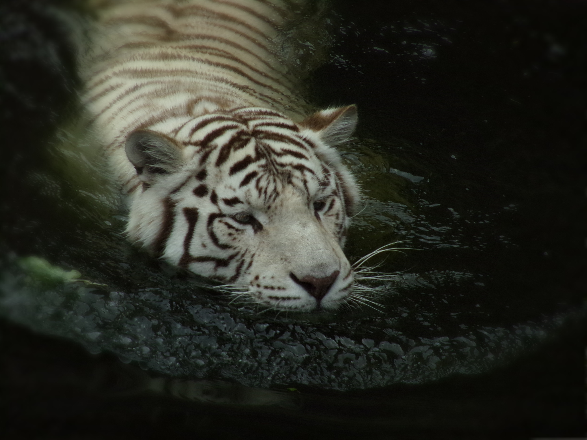
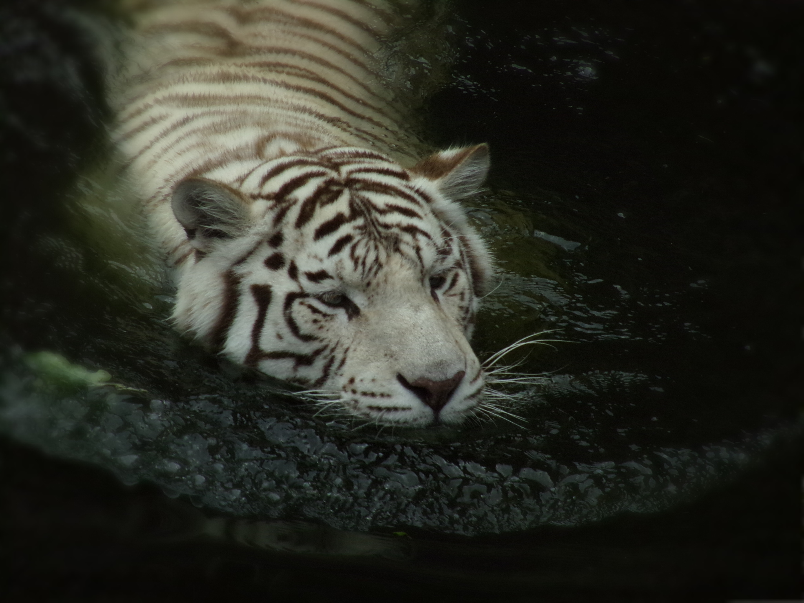

Portafolio
 

Servicios Ofrecidos
Fotografía de Eventos

Capturo momentos especiales en eventos como bodas, fiestas y corporativos.
Sesiones de Retrato

Ofrezco sesiones de retrato profesional para individuos y familias.
Fotografía Comercial

Fotografía para productos, alimentos y más para mejorar la presencia de tu marca.
Preguntas Frecuentes
¿Cuánto tiempo antes debo reservar una sesión de fotos?
Recomendamos reservar al menos 3 semanas con antelación para asegurar la disponibilidad.
¿Qué debo llevar a mi sesión de fotos?
Te recomendamos llevar varias opciones de ropa y accesorios para tener más variedad en tus fotos.
¿Cuál es el proceso para recibir las fotos?
Las fotos serán editadas y enviadas a través de una galería en línea o por correo electrónico, según tu preferencia.
¿Ofrecen paquetes para eventos?
Sí, tenemos diferentes paquetes para eventos que se ajustan a tus necesidades. Puedes consultar nuestros paquetes en la sección de servicios.
¿Puedo solicitar cambios en las fotos?
Sí, ofrecemos un número limitado de cambios en las fotos. Consulta los detalles en nuestra política de edición.